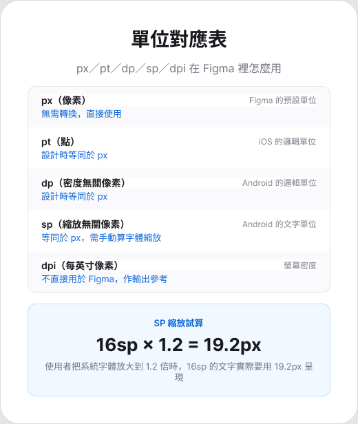
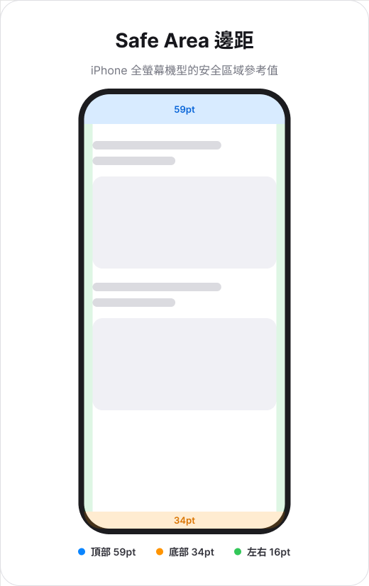
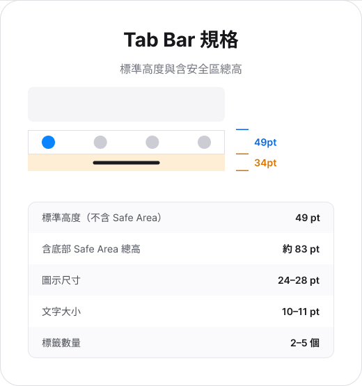
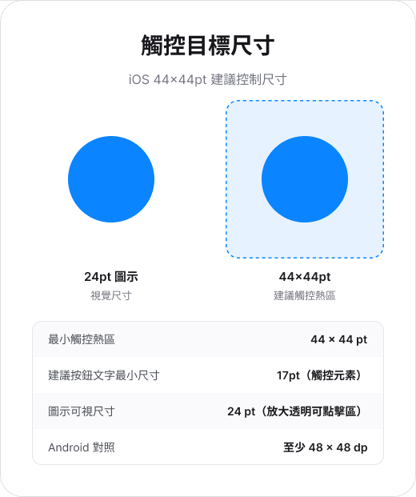

Design System
一份好的設計規範文件，是把「怎麼做才對」寫成別人不用問你就能照著做的規則。這份講義用本班自己的「APP UI 設計規範」當範例——先拆解它怎麼把 iOS／Android 的平台差異寫成可依循的規則，再看怎麼用 AI 幫你把自己的規範文件寫出來、寫完整。
Worked Example · 01
接下來 §1–§11 是本班「APP UI 設計規範」這份文件本身——它就是一份完整的設計規範文件範例：把平台差異拆成規則、把規則配上數字與圖，交件時任何人拿去照做都不用再問你。讀的時候，除了記內容，也留意它「怎麼被寫成一份規範」——這個寫法會在 §12 用 AI 重現一次。
把桌面網站縮進手機畫布，只處理了寬度，沒有處理行動裝置的操作情境。APP 介面同時受手指操作、作業系統、裝置硬體與平台慣例影響。
觸控沒有 hover，也沒有精準游標。可點擊範圍、元素間距與按壓回饋會直接影響操作成功率。
狀態列、鍵盤、權限視窗、通知、分享面板與返回手勢都會進入產品流程。
圓角、相機區、螢幕比例、像素密度、橫豎向與可調整視窗改變可用空間。
單手操作、移動中閱讀、網路中斷與短時間完成任務，使資訊層級更需要精簡。
原生感來自符合預期的行為。元件外觀可以品牌化，但返回、導覽、鍵盤、權限與系統狀態仍需要遵循平台習慣。
Platforms · 02
Apple Human Interface Guidelines 與 Material Design 都在處理資訊層級、可操作性、適配與無障礙；差異主要出現在元件語言、導覽方式與系統整合。
內容清楚、系統整合、熟悉的返回方式、Safe Area、 與 Apple 平台元件。
可適配的元件系統、視窗尺寸類別、dp／sp、Navigation Bar／Rail／Drawer 與 Material 主題。
| 面向 | iOS 常見做法 | Android 常見做法 |
|---|---|---|
| 主要導覽 | Tab Bar、Navigation Stack | Navigation Bar、Rail、Drawer |
| 返回 | 導覽列返回、邊緣返回手勢 | 系統返回手勢／按鍵、App Bar 導覽 |
| 尺寸單位 | pt；圖像資源 @2x、@3x | dp；文字 sp；密度資源桶 |
| 文字縮放 | 與語意文字樣式 | sp 與系統字體縮放 |
| 設計資源 | Apple Design Resources | Material 3 Design Kit |
HIG 與 Material Design 是「最佳實務」，不是強制規範——你可以做自己的 Design System，不需要把 APP 做得像 Apple 或 Google 的官方 APP。但自由度不是每一項都一樣：視覺風格、元件樣式可以自訂；Navigation、Back 行為、Touch Target 強烈建議遵守平台慣例；Safe Area、Permission、Privacy 與上架政策則幾乎沒有自訂空間。業界常見做法是「70% 平台習慣＋30% 品牌」：色彩、字體、元件外觀可以高度共用，但操作行為要尊重 OS。更重要的是，HIG／Material Design 是設計建議，App Store Review Guidelines／Google Play Policy 才是上架規定——沒完全照 HIG 畫，通常還是能上架；違反上架政策，可能直接被拒絕。
完整版：遵守程度分級表、三層 Design System 拆解、iOS／Android 平台行為要拆到多細、Figma Design System 資料夾建議，見〈設計指南是建議，上架規範是規定〉。
Units · 03
同一個 44 px 元素在低密度與高密度螢幕上的實際大小不同。平台因此使用邏輯單位描述介面尺寸，再由系統依裝置密度轉換成物理像素。
Density-independent Pixel
按鈕、邊距、圖示與其他非文字版面尺寸。160 dpi 時，1 dp 約等於 1 px。
Scalable Pixel
文字大小與行高。除了密度，也回應使用者的系統字體大小偏好。
SP 不適合版面尺寸。Android 的大字模式可能使用非線性縮放；以 sp 設定 padding 或固定容器高度，容易造成文字與版面比例失衡。
| 項目 | iOS | Android |
|---|---|---|
| 版面與間距 | pt | dp |
| 文字 | pt + | sp |
| 圖示 | 向量或 @2x／@3x 點陣圖 | 向量或密度資源桶 |
| 實體顯示 | px | px |
同一個邏輯尺寸的圖示，依平台密度分級輸出不同的實體像素。以 24 dp／pt 的圖示為例：
| Android 密度分級 | 縮放倍率 | 24 dp 圖示輸出 |
|---|---|---|
| mdpi | 1x | 24 px |
| hdpi | 1.5x | 36 px |
| xhdpi | 2x | 48 px |
| xxhdpi | 3x | 72 px |
| xxxhdpi | 4x | 96 px |
iOS 對應 @1x／@2x／@3x：24 pt 圖示分別輸出 24 px、48 px、72 px。Android 的換算公式為 px = dp × (裝置 dpi ÷ 160)，160 dpi 是基準密度（mdpi）。
Figma 畫布本身只有 px 一種單位；pt、dp、sp 是設計師腦中的換算，不是 Figma 的實際單位。

Canvas · 04
裝置型號與尺寸會持續更新。下表協助理解倍率與畫布差異，但專題不需要為每一款手機建立獨立畫面。主要畫布搭配尺寸驗證，更能呈現真正的版面規則。
| 機型系列 | 螢幕吋數 | 邏輯尺寸（pt） | 物理像素（px） | 倍率 |
|---|---|---|---|---|
| iPhone 17 Pro Max | 6.9" | 440 × 956 | 1320 × 2868 | @3x |
| iPhone 17 / 17 Pro | 6.3" | 402 × 874 | 1206 × 2622 | @3x |
| iPhone Air | 6.5" | 420 × 912 | 1260 × 2736 | @3x |
| iPhone 16 Pro Max | 6.9" | 440 × 956 | 1320 × 2868 | @3x |
| iPhone 16 Pro | 6.3" | 402 × 874 | 1206 × 2622 | @3x |
| iPhone 16 / 15 / 14 Pro | 6.1" | 393 × 852 | 1179 × 2556 | @3x |
| iPhone 16 Plus / 15 Plus | 6.7" | 430 × 932 | 1290 × 2796 | @3x |
| iPhone 14 / 13 / 12 | 6.1" | 390 × 844 | 1170 × 2532 | @3x |
| iPhone SE（第 3 代） | 4.7" | 375 × 667 | 750 × 1334 | @2x |
Auto Layout 管理內容成長，Constraints 與 Resizing 管理容器變化，Layout Grid 管理一致邊距。畫面適配來自這些關係，不來自逐台裝置手動微調。
Safe Area · 05
Safe Area 避免重要內容被相機區、Dynamic Island、圓角、Home Indicator、系統列或其他介面遮擋。不同裝置、方向與系統狀態會改變 inset，因此固定背誦單一頂部或底部高度並不可靠。

背景色、照片或沉浸式媒體可以延伸到螢幕邊緣；文字、按鈕、表單與其他關鍵操作仍維持在可安全閱讀與操作的位置。
畫 Figma 輔助線時，可以先用這組邊距框出安全區域範圍，再依實際裝置測試微調：
| 位置 | 邊距 | 對應系統元素 |
|---|---|---|
| 頂部 | 47pt–59pt | 狀態列、瀏海或 Dynamic Island（依機型而異） |
| 底部 | 34pt | Home Indicator 手勢橫槓 |
| 左右 | 16pt | 螢幕邊緣，與 iOS 內建 App 的預設邊距一致 |
這組數字的用法：它是畫輔助線的起始值，不是要背下來的固定答案。實際專案仍以 Figma 裝置框架自動產生的 Safe Area 為準——換機型、轉橫向或系統狀態改變時，實際 inset 會跟著變。
Navigation · 06
主要目的地、內容層級與暫時任務需要不同容器。Tab Bar 或 Navigation Bar 適合主要目的地；Navigation Stack 適合由列表進入詳情；Sheet 或 Dialog 適合短暫而聚焦的任務。
| 需求 | 常見元件 | 設計判斷 |
|---|---|---|
| 切換主要目的地 | iOS Tab Bar／Android Navigation Bar | 目的地同層級，選取狀態持續可見 |
| 進入內容詳情 | Navigation Stack／Top App Bar | 返回位置與上一層清楚 |
| 完成暫時任務 | Sheet／Dialog | 離開結果、取消與未儲存內容明確 |
| 較寬視窗 | Navigation Rail／Drawer／Sidebar | 目的地不變，容器依可用空間調整 |
Tab Bar 標準高度是 49pt；在有 Home Indicator 的全螢幕機型上，底部還要再加 34pt 的安全區，總高度約 83pt。圖示建議 24–28pt，文字 10–11pt，背景多半用半透明毛玻璃（System Thin Material）讓底下內容捲動時隱約透出。

Touch and Feedback · 07
觸控目標可以大於可見圖示。24 pt／dp 的圖示放在較大的透明可點擊區域中，既能維持視覺精緻度，也能降低誤觸。相鄰控制項之間的間距同樣重要。

Swipe、長按、拖曳與邊緣返回能提高熟練操作的速度，但不容易被第一次使用的人發現。重要功能同時具備可見入口或無障礙 action，流程才不會依賴猜測。
Type and Forms · 08
標題、內文、說明與標籤透過語意樣式建立層級。iOS 的 與 Android 的 sp 會回應字體大小設定，因此元件高度、換行和間距也需要一起成長。
大字模式常見破損：固定高度切掉第二行、兩個按鈕在同一列互相擠壓、重要文字被省略號取代、文字變大但行高仍固定。
語意樣式在設計稿裡最後仍要落成具體數字。iOS 使用系統字體 San Francisco（SF），標籤依用途分成四類：主標題（Large Title，主要頁面標題，例如導覽列中的螢幕標題）、次標題（Secondary Label，主標題下的描述文字）、正文（Body Text，段落與主要內容）、小字標籤（Small Text Label，備註、時間戳這類輔助資訊）。
| 標籤類型 | 字體樣式 | 字級 | 粗細 | 使用場合 |
|---|---|---|---|---|
| 大標題 | SF Pro Display | 34pt | Bold／Regular | 主畫面或主要功能標題 |
| 標題 | SF Pro Text | 28pt | Bold／Regular | 部分標題或次要標題 |
| 標題文字 | SF Pro Text | 17pt | Bold | 重要內容標題 |
| 副標題文字 | SF Pro Text | 15pt | Regular | 輔助標題或次要描述 |
| 正文 | SF Pro Text | 17pt | Regular | 段落文字等正文內容 |
| 重點文字 | SF Pro Text | 16pt | Regular | 需要強調的資訊 |
| 註釋 | SF Pro Text | 13pt | Regular | 輔助資訊，如時間或來源 |
| 小字註解 1 | SF Pro Text | 12pt | Regular | 小型標註或提示訊息 |
| 小字註解 2 | SF Pro Text | 11pt | Regular | 非常小的說明或補充內容 |
這張表的用法：它是理解 iOS 字級階層的參考，不是拿來寫死的清單。實際套用時仍以語意樣式為準——把「正文」對應到 Body 這個語意層級，讓系統依使用者的字體設定去調整實際尺寸。若把 17pt 直接鎖成固定值， 就失效了，前面提的大字模式破損也會跟著出現。
Android 使用系統字體 Roboto（多語言則搭配 Noto），字級單位是 sp，對應 Material Design 的角色分類：
| 角色 | 字級 | 粗細 | 使用場合 |
|---|---|---|---|
| 顯示文字（Display） | 34sp | Regular／Bold | 大型標題或重點內容的強調展示 |
| 頁面標題（Headline） | 24sp | Regular／Bold | 頁面主標題 |
| 子標題（Subhead） | 16sp | Regular | 次要標題 |
| 正文（Body） | 14sp | Regular | 主內容文字，例如段落描述 |
| 按鈕文字（Button） | 14sp | Medium | 按鈕上的文字 |
| 說明文字（Caption） | 12sp | Regular | 小型標籤或輔助性內容 |
| 註腳（Overline） | 10sp | Regular | 非常小的輔助文字 |
可讀性下限：正文最小不低於 iOS 11pt／Android 12sp；行距維持在字級的 1.2–1.5 倍；按鈕文字至少 iOS 17pt／Android 14sp，確保小螢幕上仍好點擊。
…）並限制最大行數，避免內容溢出容器。標籤、輸入格式與必填資訊清楚，placeholder 不作為唯一標籤。
焦點明確，適合的鍵盤類型出現，欄位仍在可視範圍。
錯誤訊息靠近欄位，內容說明可修正方向，而非只顯示紅框。
完成狀態與下一步清楚，重複送出或返回造成的結果可預期。
鍵盤展開後，畫面高度大幅減少。表單捲動、焦點欄位上移、主要操作位置、鍵盤收合與返回行為都屬於 APP Mockup 的真實狀態。
Accessibility · 09
POUR 四項原則可作為 APP 介面的完整視角：可感知（Perceivable）、可操作（Operable）、可理解（Understandable）與穩健（Robust）。
| 面向 | 介面證據 |
|---|---|
| 對比 | WCAG 2.2 AA 一般文字至少 4.5:1；至少 18 pt 的一般文字或 14 pt 的粗體文字，以及理解內容或操作所需的圖示、控制邊界，至少 3:1。 |
| 文字縮放 | 大字模式仍可閱讀、捲動與完成主要操作。 |
| 語意 | 互動元件具有可存取名稱、角色與狀態；輔助技術的閱讀順序與視覺順序一致。 |
| 觸控 | 目標大小、間距與替代操作可降低精細手勢需求。 |
| 狀態 | 錯誤、完成與選取狀態不只依賴顏色。 |
WCAG 2.2 提供現行且廣泛採用的對比檢核門檻。APCA 以視覺感知為基礎，曾作為 WCAG 3 的研究方向之一；規格仍可能變動，適合作為延伸觀察，不適合取代目前交付所使用的 WCAG 2.2 基準。
Deliverable · 10
本單元產出是一個具有平台規範意識的高保真 APP 主要頁面。完成度不只看單一畫面的美觀，也看系統區域、元件狀態與適配規則是否能被辨識。
| 交件內容 | 完成範圍 | 可檢查證據 |
|---|---|---|
| 主要頁面 | 一個明確使用情境的 APP 高保真頁面 | 平台、畫布尺寸、頁面目的 |
| 系統區域 | 狀態列、安全區域、導覽與底部手勢區 | Layout Grid 或輔助框線 |
| 元件狀態 | 至少一組主要操作元件的狀態 | Component／Variants |
| 適配規則 | 小畫面、大字模式或鍵盤展開其中一項 | 補充 Frame 或版面註記 |
Comparison · 11
前面各節分別講了單位、字體、觸控與導覽的判斷邏輯；這裡把兩個平台的官方數字並排整理，作為交件前快速核對用。
| 項目 | iOS（HIG） | Android（Material Design 3） |
|---|---|---|
| 邏輯單位 | pt（Point） | dp（Density-independent pixel） |
| 文字單位 | pt | sp（Scale-independent pixel） |
| 設計畫布（1x） | 393 × 852 pt（iPhone 16 / 15 Pro） | 360 × 800 dp（Standard Android） |
| 主流倍率 | @2x、@3x | mdpi、hdpi、xhdpi…（常見為 @2x、@3x） |
| 項目 | iOS（San Francisco） | Android（Roboto／Google Sans） |
|---|---|---|
| 大標題（H1） | 34pt（Large Title） | 32sp（Headline Medium） |
| 內文（Body） | 17pt（iOS 標準基準字級） | 16sp（Body Large） |
| 輔助文字 | 11pt–13pt（Caption） | 12sp（Label Medium） |
| 行高設定 | 系統自動處理，強調垂直節奏 | 嚴格遵守 4dp 的倍數網格 |
| 項目 | iOS（HIG） | Android（Material 3） |
|---|---|---|
| 最小觸控熱區 | 44 × 44 pt | 48 × 48 dp |
| 常見按鈕高度 | 44pt–50pt | 40dp（S）、48dp（M）、56dp（L） |
| 按鈕圓角 | 偏好連續圓角（Squircle），樣式較簡約 | 提供 Elevated、Filled、Outlined 多種層級 |
| 文字大小／粗細 | 通常 16–17pt／Semibold | 預設 14sp／Medium（有時全大寫） |
| 項目 | iOS（HIG） | Android（Material 3） |
|---|---|---|
| 標準左右邊距 | 16pt | 16dp |
| 網格系統 | 較彈性，強調視覺平衡 | 嚴格遵守 8dp Grid（間距與尺寸皆為 8 的倍數） |
| 特殊區域 | 需考慮動態島（Dynamic Island）避讓 | 需考慮多樣化的螢幕開孔與虛擬導航列 |
| 項目 | iOS（HIG） | Android（Material 3） |
|---|---|---|
| 主要導航列 | Tab Bar（底部，最多 5 個標籤） | Navigation Bar（底部，通常帶藥丸型選取框） |
| 返回機制 | 左上角返回鍵＋螢幕左邊緣右滑手勢 | 系統層級返回手勢（兩側向內滑）＋箭頭 Icon |
| 浮動動作按鈕 | 較少見，主要動作通常放右上或底部 | FAB（Floating Action Button）位於右下角 |
| 選單／彈窗 | Action Sheet（底部圓角浮起） | Bottom Sheet（貼齊底部，層次感強） |
這張總表的用法：拿來對照兩個平台「同一件事的官方預設值」，不是要在單一專案裡混用兩套數字。專題選定 iOS 或 Android 其中一個平台後，仍以該平台前面各節的判斷邏輯為準。
AI Drafting · 12
前面 11 節是「規範文件寫出來會長什麼樣子」——有判斷邏輯、有數字、有可勾選的檢核表。輪到你的專題要寫自己的規範文件時，AI 可以幫忙把「你腦中知道但沒寫下來的規則」整理成一份別人不用問你就能照著做的文件，但判斷內容對不對、數字準不準，仍然要靠你自己核對來源。
AI 不知道你的產品規則，先由你口述或條列，AI 幫你整理成規範文件的骨架（規則＋原因＋例外）。
你是一位撰寫設計規範文件的資深 UI 設計師。 我要幫我的專題「[專案名稱]」寫一份「[按鈕／表單／色彩等元件]」的使用規範。 以下是我目前的判斷（可能不完整）： [貼上你條列的規則，例如：主要按鈕一個畫面只能有一個、次要按鈕用外框不用填色……] 請把這些規則整理成規範文件的格式，每條規則包含： 1. 規則本身（一句話講清楚要怎麼做） 2. 為什麼（不遵守會出什麼問題） 3. 至少一個「符合規則」與一個「違反規則」的具體例子（用文字描述畫面，不用畫圖）
規範文件最容易漏掉「特殊情況」——按鈕文字太長怎麼辦、兩個主要按鈕同時出現怎麼辦。讓 AI 幫你找沒想到的例外，你來判斷要不要收進規則。
針對上面這份規範文件，請你扮演「故意找麻煩的工程師」， 列出 5 個可能不符合現有規則、或規則沒講清楚的邊界情況 （例如：文字超長、同時要放兩個主要動作、深色模式、螢幕很窄的裝置）。 每個情況請直接問我：這種狀況該怎麼處理？不要幫我自己決定答案。
規範文件寫給人讀，檢核表給人在交件前跑一遍。本單元的 APP 介面檢核表 就是這樣從 §1–§11 的規範轉出來的——同一份規範，兩種用法。
請把上面確認過的規範文件，轉換成一份交件前可以勾選的檢核表。 每一項檢核請包含： 1. 檢核項目（一句話，能直接勾選「過／沒過」） 2. 「沒過會長什麼樣」的具體描述（不是抽象的「不符合規範」） 分類方式請參考本單元 8 大類（平台、單位、安全區域、導覽、觸控、狀態、文字、無障礙）， 不適用的類別可以刪除，也可以依你的元件性質自訂新類別。
AI 不能幫你做的事：AI 產出的數字（尺寸、對比度、間距）一定要回頭核對官方文件或本單元 §11 的對照表，不能直接採用——AI 常把 iOS 和 Android 的數字混著講，或引用已經過時的版本。規則要不要收進文件、例外要怎麼處理，也是設計判斷，AI 只能列出選項，不能代你決定。
resources/App 設計.pdf（iPhone 機型尺寸表，對應第 4 節；安全區邊距數字，對應第 5 節）、resources/sp-dp.md（dp／sp 的定義與使用場景，對應第 3 節）、resources/常見標籤類型.md（iOS 標籤類型、SF 字級表、行高與邊距，對應第 8 節）、resources/參考資料.md 與 resources/參考資料html/（官方連結、Android 字級表、圖示輸出換算、Tab Bar 規格與雙平台對照，對應第 3、6、8、11 節與本清單）、README.md。第 3、5、6、7 節的示意圖依本單元數字繪製於 Figma 原始檔，圖檔存於 resources/unit-mapping-diagram.png、resources/safe-area-diagram.png、resources/touch-target-diagram.png、resources/tabbar-spec-diagram.png。第 3 節的 Figma 單位對應與 SP 縮放試算取自 resources/參考資料html/ 內「px、pt、ppi、dpi、dp、sp 名詞解釋」子頁；該頁另列的裝置畫布尺寸與 App 設計.pdf 的機型尺寸表數字不一致（iPhone 14 Pro 兩份寫法不同），因此未採用，以 App 設計.pdf 第 4 節既有數字為準。Unit_01/persona-prompt.html、Unit_02/interview-prompt.html 已建立的「AI 協作提示詞頁」寫法與版型，非取自外部資料來源。